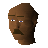

Vigroy

| Config name | shilocartdriver |
| NPC id | 511 |
| Combat level | hidden |
| Options | Talk-to |
| Wander range | 3 tiles from spawn |
| Area folder | area_shilo |
| Defined in | scripts/areas/area_shilo/configs/shilo.npc |
Vigroy
A cart driver, it looks like he's quite experienced.
Show all 1 spawn on the world map → Open in knowledge graph →
Locations
| Area | Coordinates | Level | Count | Map |
|---|---|---|---|---|
| Kharazi Jungle | 2834, 2954 | 0 | 1 | view |
Dialogue
PlayerHello!
VigroyHello Bwana!
VigroyI am offering a cart ride to Brimhaven if you're interested! It will cost gold coins. Is that Ok?
PlayerYes please, I'd like to go to Brimhaven.
VigroySorry, but it looks as if you don't have enough money. Come and see me when you have enough for the ride.
VigroyGreat! Just hop into the cart then and we'll go!
You hop into the cart and the driver urges the horses on. You take a taxing journey through the jungle to Brimhaven.
You pay the fare and hand gold coins to Vigroy.
You feel tired from the journey, but at least you didn't have to walk all that distance.
PlayerNo thanks.
VigroyOk Bwana, let me know if you change your mind.
Referenced in scripts
scripts/areas/area_shilo/scripts/vigroy.rs2